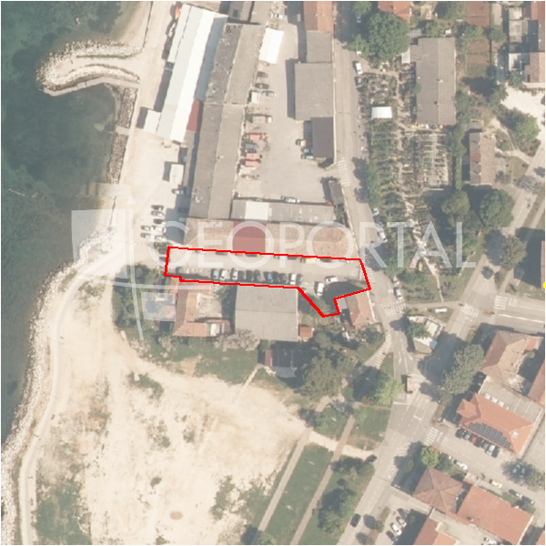

#36312 · ISTRA, POREČ okolica TOP građevinsko zemljište u mirnom mjestu
Poreč, Poreč, Istarska · zemljiste · njuskalo · status active · oglas ↗
Ocjena
- Score
- 61 rule 61 · LLM – · 12.09.2026.
- RLV
- 797.000 € (828 €/m²) · ratio 5,14
- Ukupna investicija
- 2,06 M€
- GBP
- 770 m²
- Feedback
- –
- CRM
- –
Oglas
- Cijena
- 155.000 € (156 €/m²)
- Površina
- 996 m² · DKP 963 m² (odstupanje -3,3 %)
- Prodavatelj
- agencija · Pontera nekretnine
- Prvi put
- 11.09.2026. · zadnje 11.09.2026. · 0 d na tržištu
Povijest cijene
| Datum | Cijena |
|---|---|
| 11.09.2026. | 155.000 € |
Flagovi
zop_70_100 ZOP pojas 70/100 m (−10)zone_uncertainty zona nije pregledana (reviewed: false) (−5)
llm_pending LLM ekstrakcija/ocjena nedostupna
Komponente score-a
| rlv | {'gbp': 770.2, 'kis': 0.8, 'nkp': 577.6500000000001, 'noi': None, 'rlv': 796905.8478260874, 'ratio': 5.141328050490887, 'value': None, 'phases': 1, 'profile': 'obala_visestambeno', 'gdv_neto': 3234840.0000000005, 'cost_soft': 77020.0, 'gdv_bruto': 4043550.0000000005, 'kis_known': False, 'total_inv': 2058992.0, 'cost_build': 1540400.0, 'cost_other': 277272.0, 'cost_sales': 121306.50000000001, 'demolition': False, 'gbp_source': 'kis', 'rlv_per_m2': 827.7391304347831, 'parcel_area': 962.75, 'parcelation': False, 'roi_on_cost': 0.5121639617832418, 'profit_at_ask': 1054541.5000000005, 'cost_demolition': 0.0, 'total_inv_phase': 2058992.0, 'parcel_area_effective': 962.75, 'sale_price_per_m2_nkp': 7000.0} |
| hard | [] |
| info | ['llm_pending'] |
| rubric | {'permits': {'max': 5.0, 'detail': {'permit': 'none'}, 'points': 0.0}, 'location': {'max': 15.0, 'detail': {'source': 'rlv.yaml:istra_zapad/row1', 'sale_price_per_m2_nkp': 7000.0}, 'points': 15.0}, 'physical': {'max': 4.0, 'detail': {'slope_pct': 6.7, 'slope_points': 2.0, 'sea_row1_bonus': True}, 'points': 3.0}, 'liquidity': {'max': 3.0, 'detail': {'n_cuts': 0, 'points_cut': 0.0, 'points_days': 0.008333333333333333, 'seller_type': 'agencija', 'points_fresh': 0.5, 'price_cut_pct': None, 'days_on_market': 1, 'points_private': 0}, 'points': 0.51}, 'rlv_ratio': {'max': 25.0, 'detail': {'rlv': 796906, 'ratio': 5.141, 'asking_price': 155000.0}, 'points': 25.0}, 'ticket_fit': {'max': 10.0, 'detail': {'asking_price': 155000.0}, 'points': 4.13}, 'zone_quality': {'max': 8.0, 'detail': {'reason': 'zona nepoznata', 'source': 'nepoznato', 'zone_class': None}, 'points': 2.0}, 'profit_potential': {'max': 20.0, 'detail': {'roi_on_cost': 0.512, 'profit_at_ask': 1054542}, 'points': 20.0}, 'price_vs_benchmark': {'max': 10.0, 'detail': {'source': 'auto:Poreč', 'deviation': 0.105, 'ask_eur_m2': 156, 'benchmark_eur_m2': 173.89}, 'points': 6.58}} |
| weights | {'llm': 0.4, 'rule': 0.6, 'model': 0.0} |
| penalties | {'zop_70_100': 10, 'zone_uncertainty': 5} |
| raw_score | 76,2 |
| rlv_notes | [] |
| flag_notes | {'max_gbp': 770, 'zop_band': '70', 'total_inv': 2058992, 'zone_code': None, 'zone_class': None, 'zone_source': 'nepoznato', 'zone_reviewed': None} |
| caps_applied | [] |
GIS
- Čestica
- k.o. 323748, k.č. 3868 (pin_buffer, 0,78); k.o. 323748, k.č. 3909 (pin_buffer, 0,68); k.o. 323748, k.č. 3884 (pin_buffer, 0,66)
- Zona
- – (–)
- kig / kis / katnost
- – / – / –
- GP / UPU
- – · UPU –
- Pristup / nagib
- unknown · 6,7 % (max 11,7 %)
- More
- 18 m · red 1 · ZOP 70
- Zaštite
- Natura ne · zaštićeno ne · kulturno dobro ne
- Zgrade na čestici
- 0 %
- Match
- 0,78
Karta
Ortofoto (DOF)

RLV kalkulacija — pretpostavke
| gbp | {'value': 770.2, 'source': 'kis'} |
| kis | {'value': 0.8, 'source': 'default_profila'} |
| sea_row | {'value': '1', 'source': 'gis'} |
| soft_pct | {'value': 0.05, 'source': 'profil'} |
| nkp_ratio | {'value': 0.75, 'source': 'profil'} |
| cost_other | {'value': 277272.0, 'source': 'profil: doprinosi+uređenje po m² GBP, financiranje+rezerva % gradnje'} |
| parcel_area | {'value': 962.75, 'source': 'dkp'} |
| asking_price | {'value': 155000.0, 'source': 'oglas'} |
| margin_on_cost | {'value': 0.15, 'source': 'profil'} |
| build_cost_per_m2_gbp | {'value': 2000.0, 'source': 'profil'} |
| sale_price_per_m2_nkp | {'value': 7000.0, 'source': 'rlv.yaml:istra_zapad/row1'} |
| transfer_tax_and_acquisition | {'value': 0.06, 'source': 'profil'} |
Ekstrakcija iz oglasa
| utilities | ['struja', 'voda'] |
| access_road | yes |
Benchmarks mikrolokacije
| Vrsta | Vrijednost | n | Od | Izvor |
|---|---|---|---|---|
| land_ask_eur_m2 | 174 | 302 | 11.09.2026. | auto |
| newbuild_sale_eur_m2_nkp | 3.695 | 8 | 11.09.2026. | auto |
Opis oglasa
Zemljište za gradnju u mirnom i zelenom okruženju Poreča Ova jedinstvena parcela od 996 m² smještena je u idiličnom kutku u okolici Poreča, okružena netaknutom prirodom i zelenilom, gdje se svaki dan osjeća spokoj i tišina daleko od gradske vreve. Lokacija nudi savršenu kombinaciju privatnosti i pristupa svim sadržajima potrebnim za ugodan život. Zemljište je idealno za gradnju obiteljske kuće iz snova ili manje zgrade s do pet stanova, pružajući mogućnost stvaranja prostora koji odiše toplinom i harmonijom. Struja, voda i pristupni put nalaze se u neposrednoj blizini, što omogućava jednostavno planiranje gradnje. Uživajte u nekoliko minuta vožnje do mora i centra Poreča, gdje možete provoditi opuštajuće šetnje uz obalu, istraživati lokalne restorane i kafiće ili jednostavno upijati mediteransku atmosferu. Ovo zemljište predstavlja savršenu priliku za miran i ispunjen život u prirodnom okruženju, ali i za sigurnu i dugoročnu investiciju u nekretninu uz more. Mjesto gdje se snovi o životu u harmoniji s prirodom mogu pretvoriti u stvarnost. ID KOD AGENCIJE: 5512 Pontera Properties Mob: +385 51 858 544 Tel: +385 51 858 544 E-mail: info@pontera.hr www.pontera.hr